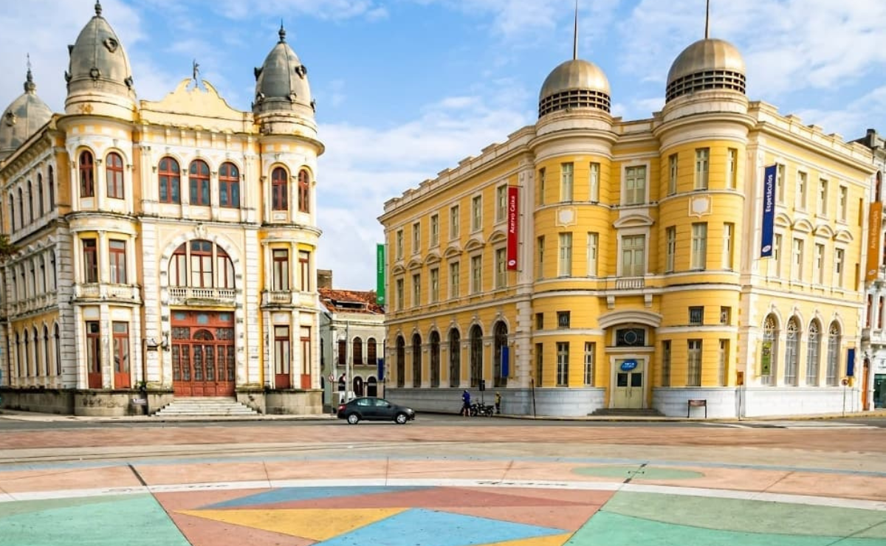
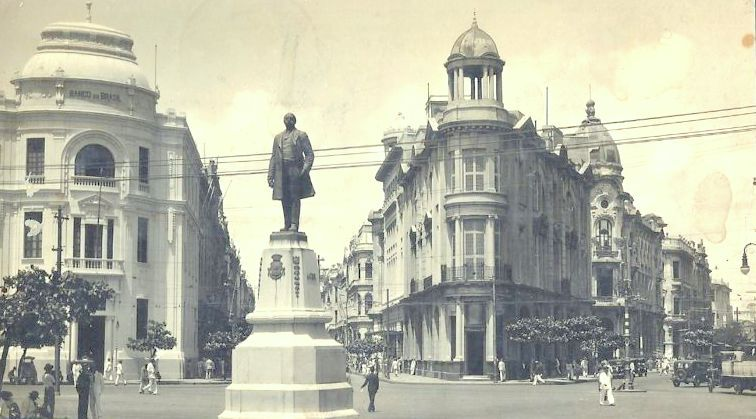

Marco zero
O Marco Zero é um monumento localizado no bairro do Recife, na cidade de Recife, Pernambuco, Brasil. Ele é considerado o ponto de partida das distâncias entre a cidade do Recife e outras cidades do Brasil e do mundo. Além disso, o local é um importante ponto turístico da cidade, muito procurado por turistas que querem conhecer a história e a cultura de Recife.
Atualmente, o Marco Zero é um dos principais cartões-postais de Recife e é palco de diversas apresentações culturais, como shows, exposições e apresentações de dança. Além disso, a região ao redor do monumento é muito movimentada, com muitos bares, restaurantes e lojas.
Origem do Marco Zero
O monumento foi construído em 1938 para comemorar os 400 anos da fundação da cidade do Recife e é palco de diversas apresentações culturais, como shows, exposições e apresentações de dança. A região ao redor do monumento é muito movimentada, com muitos bares, restaurantes e lojas.
